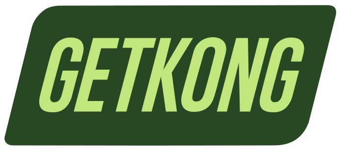

Brokkoli wird verladen…
—
0
m
×1,0
0
0 m
LVL 1
0
km/h
0
Turbo
Pause
Esc oder Leertaste — weiter
Bordstein!
Springen
= Lieferung
Ding Dong.
Level up · +100 m
Brems
Boost
Runner
Nr.
0001
Heute
Alle Zeiten
Ich akzeptiere die Datenschutzbedingungen
Let's Go
◀
▶
▲
▼
Leertaste
Lenken · Gas · Bremse · Springen & Liefern
Wischen
Tippen
Lenken · Springen & Liefern
Stick
R2
L2
✕
Lenken · Gas · Bremse · Springen & Liefern
Controller verbunden —
✕
oder
Options
Für Ton einmal ins Bild klicken
Fiktives Spiel. Wirf zuhause bitte kein Gemüse in fremde Fenster.
Bestenliste
Heute
Alle Zeiten
Wird geladen…
Mehr anzeigen
Let's Go
Zurück
getkong.run · Cannafair
—
Angemeldet
Autsch.
Weiter geht's
—
0 m
Platz wird ermittelt…
0 m
gefahren
×1,0
Multi
0
Lieferungen
0
Brokkoli
1
Level
—
Nochmal
Bestenliste
Teilen
getkong.run · Cannafair
—